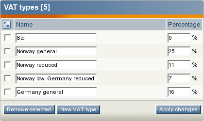
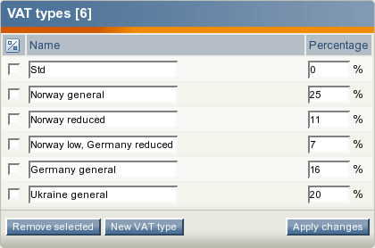
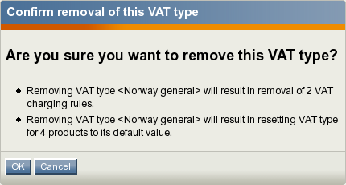

Managing VAT types
This section describes how you can add, remove and modify static VAT types using the administration interface.
Creating a VAT type
It is necessary to create the VAT types in order to use value added taxes in your webshop system. The following list reveals how this can be done.
Click the "Webshop" tab in the administration interface and select the "VAT types" link on the left. You will be taken to the interface displaying the list of existing VAT types as shown in the following screenshot. This interface can also be accessed by requesting "/shop/vattype" in the URL.

The list of VAT types.
Click the "New VAT type" button. The system will add a new list item called "VAT type 1" with default percentage 0%.
Specify the desired name and percentage for this VAT type (see the next screenshot).

The newly added VAT type in the list of VAT types.
Click the "Apply changes" button to save your changes or click the "New VAT type" button to continue adding new VAT types.
Editing a VAT type
If you wish to modify one of your VAT types, do the following:
Open the list of VAT types by clicking the "Webshop" tab in the administration interface and selecting the "VAT types" link on the left.
Specify the desired percentage and/or name for the VAT type you wish to modify (this can be done for several VAT types at the same time).
Click the "Apply changes" button to save your changes.
Removing a VAT type
You are not allowed to remove a VAT type that is used as "default VAT type" for your product class. Removing a VAT type that is assigned to your products and/or used by your VAT rules is possible but not recommended. (These VAT rules will be removed and the default VAT type will be assigned to the products.) In most cases, you should change the name and/or percentage of the VAT type instead of removing it from the system.
Please note that you are not allowed to remove all the VAT types. If you do not wish to charge any VAT for your products then just leave one VAT type and set its percentage to zero.
The following text reveals how to remove one or more VAT types from the webshop system.
Open the list of VAT types by clicking the "Webshop" tab in the administration interface and selecting the "VAT types" link on the left.
Use the checkboxes to select the VAT types that you wish to remove. Do not select all the VAT types.
Click the "Remove selected" button.
If some of your products use this VAT type and/or some of your VAT rules are based on this VAT type, the system will display a confirmation dialog as shown in the following screenshot.

The confirmation dialog.